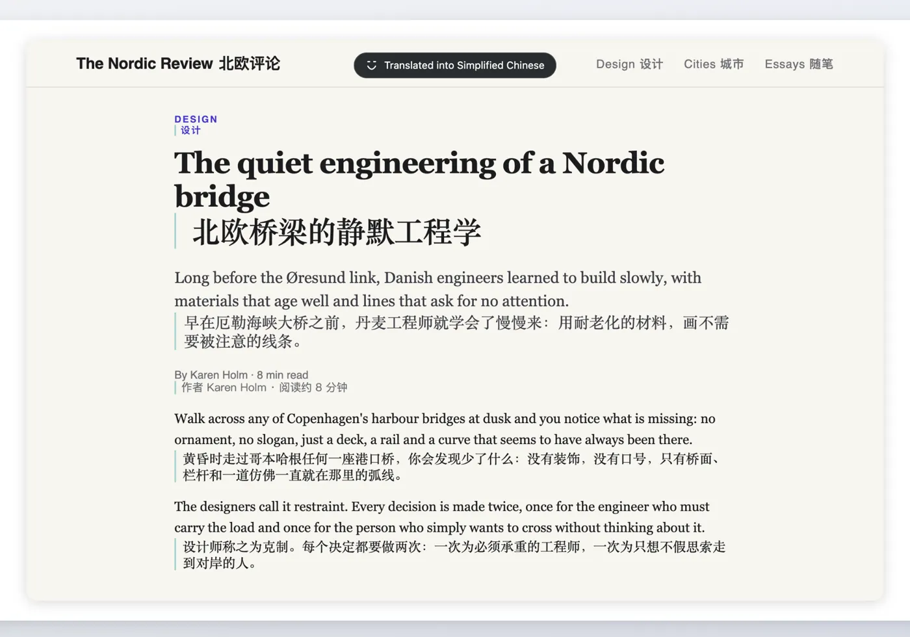

Ordbro
Translation · macOS (Safari)
A bridge between languages — on your terms.

Ordbro (Danish for “word bridge”) carries what you read and watch into your own language, whatever language it started in. Translate a page next to the original or replace it in place, or let Ordbro find the subtitles of a video and translate them ahead of playback.
- Pages, on your terms — translate the whole page beside the original or in place; select a few words to translate just those.
- Video subtitles — Ordbro finds the subtitle file, translates ahead of the video and shows it in a clean layer that follows pause, seeking, speed and fullscreen.
- Context aware — names, pronouns and meaning stay consistent from line to line instead of being translated sentence by isolated sentence.
- Your service, your key — OpenAI, Google Gemini, Anthropic Claude, DeepSeek, any OpenAI-compatible endpoint (including a model on your own Mac), or a machine-translation service such as DeepL, Google Cloud Translation or Azure Translator.
- Per-site rules — translate on request, always, or never, per site. Login and payment pages are never cached.
- Private by design — no account, no analytics, no tracking, no ads, and no Ordbro server in the middle.
Reading and watching
Web page translation is free. Video subtitle translation is part of Ordbro Pro, a one-time purchase with Family Sharing — no subscription. Translations are cached on your Mac, so reading or watching the same thing again costs nothing.
Three reading modes cover most situations: translation only, bilingual (translation alongside the original), and original, which restores the page exactly as it was and pauses translation requests.
What you need
macOS with Safari, a translation provider and that provider's API key. There is nothing to sign up for in Ordbro itself: you paste the key once in Settings, press Test connection, and the provider bills you directly.
Subtitle translation needs a video that actually has subtitles. DRTV is available in Denmark and requires a free DR login to play; Ordbro neither changes nor bypasses that. Ordbro is an independent app and is not affiliated with, endorsed by or sponsored by DR (Danmarks Radio).
Setting up Ordbro?
Enabling the extension, choosing a provider, missing subtitles and restore questions are all covered in the support section.
Open Ordbro support